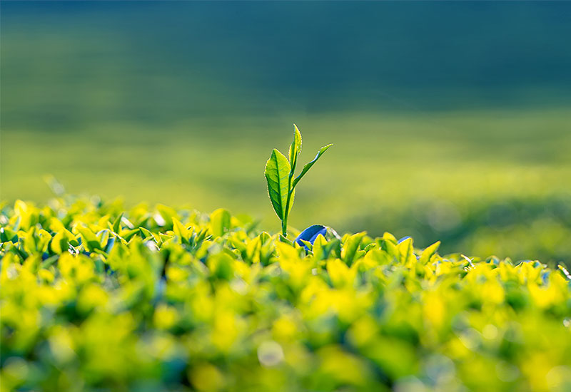

about us
다온이 담은 이야기
When tea comes, good energy follows.
우리는 믿습니다. 차는 음료가 아니라 기운을 마시는 일이라는 것을.
한 잎의 찻잎이 자라기까지의 시간, 자연의 햇살과 바람,
그리고 그것을 정성으로 우려내는 손길까지.
그 모든 과정이 담겨 당신의 하루에 조용히 스며듭니다.
다온은 자연의 리듬과 사람의 온기를 담아
좋은 일이 시작되는 순간을 만듭니다.

-
01. Tea Philosophy
We brew warmth, not just tea.
다온차는 한 잔의 차에 많은 온기를 담겠다는 마음에서 시작되었습니다. 단순히 목을 적시는 음료가 아닌, 지친 하루를 감싸는 작은 쉼이 되기를 바랍니다.
-
02. Quality & Balance
Balanced Flavor and more
다온이 가장 중요하게 생각하는 기준은 균형입니다. 단맛이 과하지 않도록, 향이 부담스럽지 않도록, 전통이 무겁게 느껴지지 않도록 조율합니다.
-
03. Daily Ritual
Your Everyday Ritual.
다온은 특별한 날보다 평범한 하루에 더 어울리는 브랜드가 되고 싶습니다. 눈에 띄기보다 기억에 남는 것. 다온의 차는 그렇게 공간과 시간 사이에 따뜻하게 자리합니다.